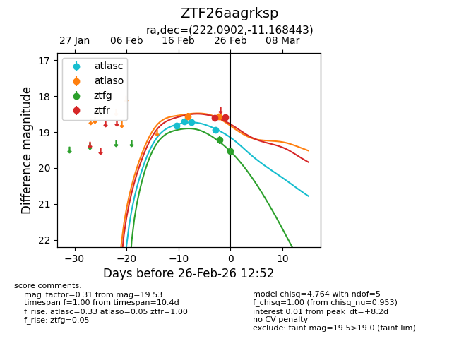
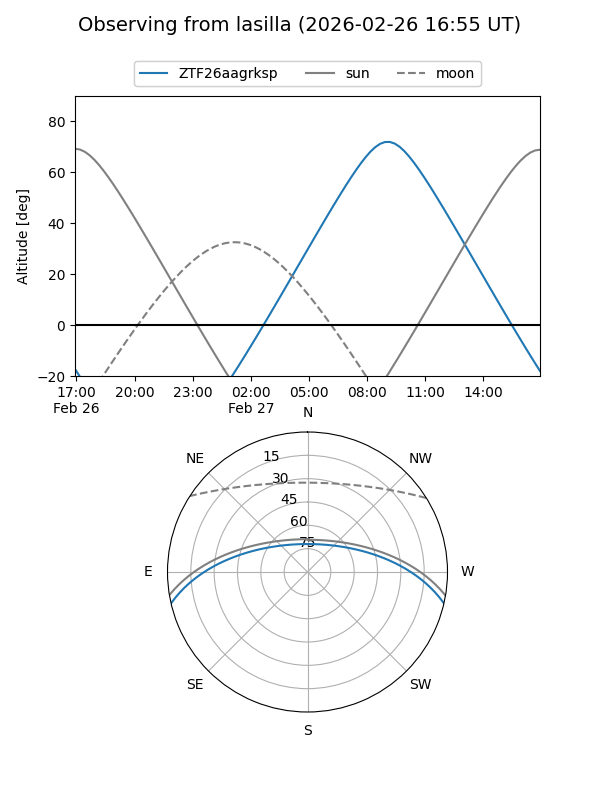
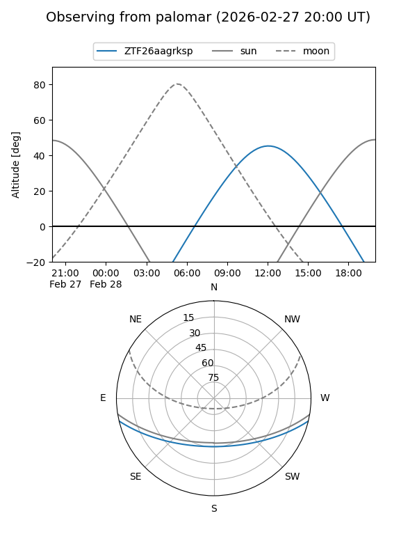
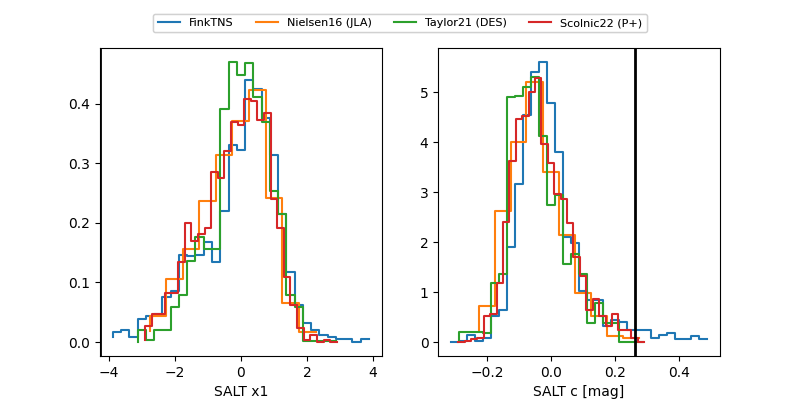

ZTF26aagrksp
Target ZTF26aagrksp at 2026-02-26 12:53
Aliases and brokers:
FINK: link
Lasair: link
ALeRCE: link
alt names
ZTF26aagrksp (ztf,fink_ztf)
Coordinates:
equatorial (ra, dec) = 222.0902,-11.16844
equatorial (HMS+DMS) = 14:48:21.65,-11:10:06.39
galactic (l, b) = (343.3394,+42.34767)
Flags:
Photometry:
last atlasc=18.94, atlaso=18.58, ztfg=19.53, ztfr=18.59
4 atlasc, 2 atlaso, 2 ztfg, 2 ztfr detections
Lightcurve

Visibility


Additional plots
